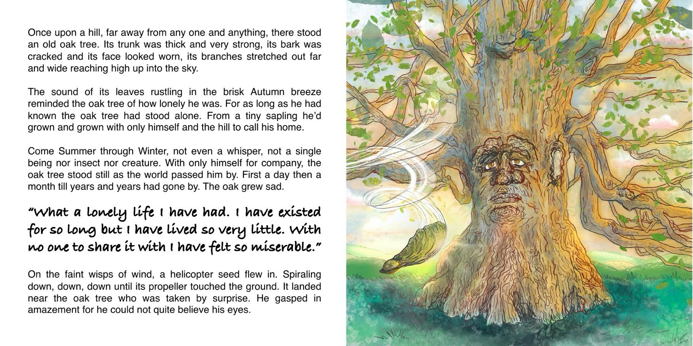
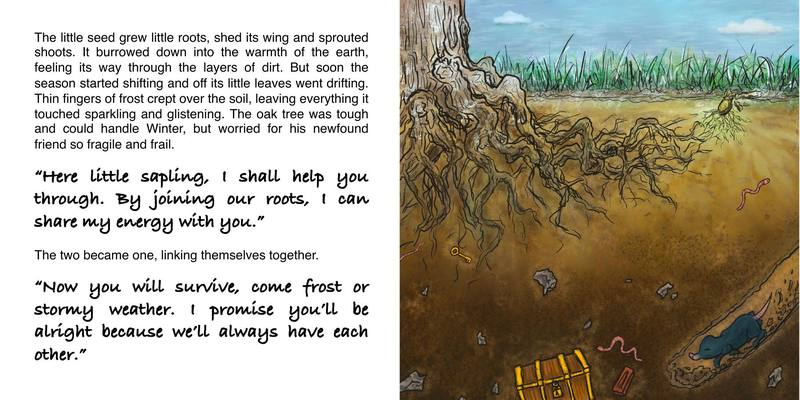
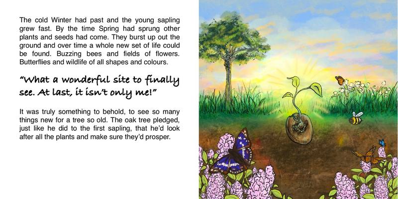
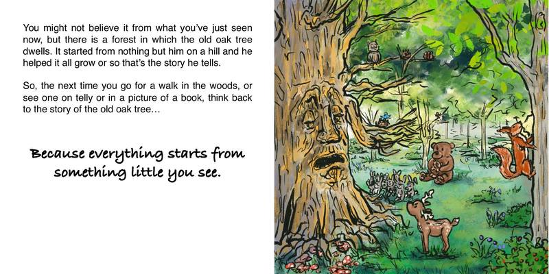
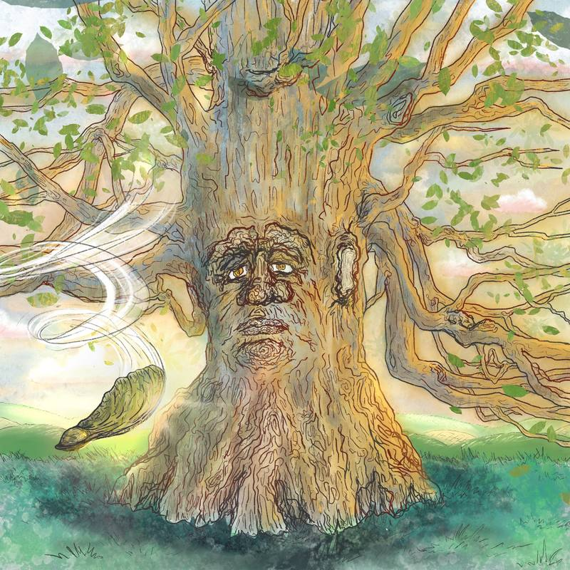
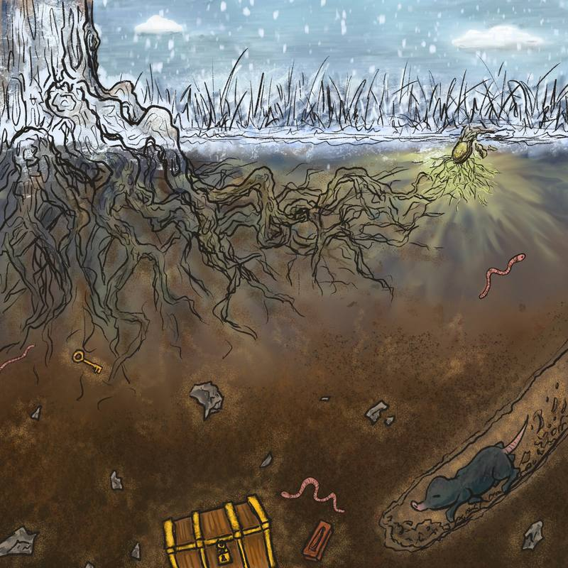
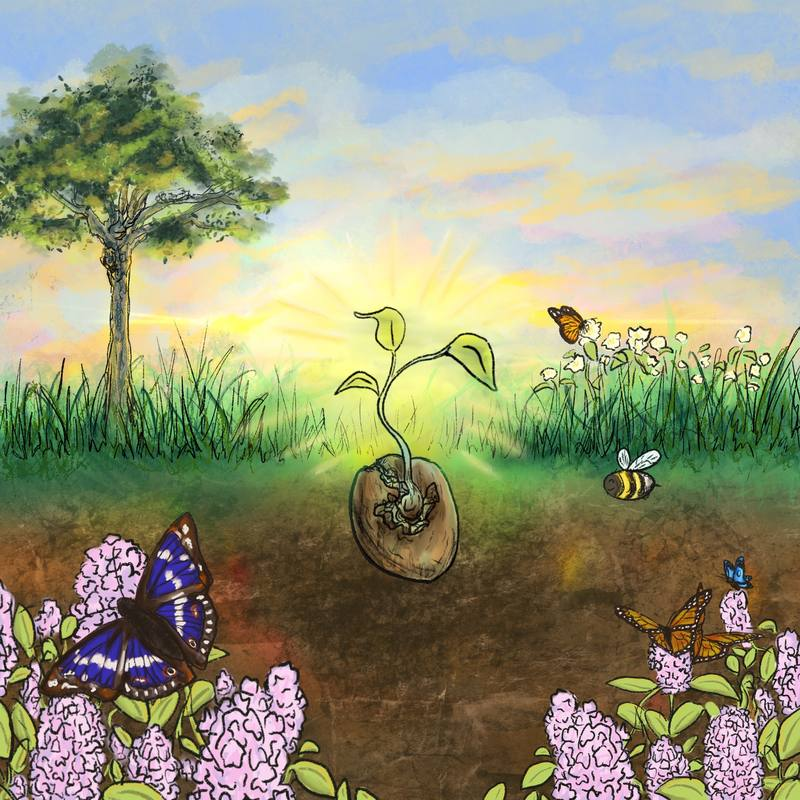
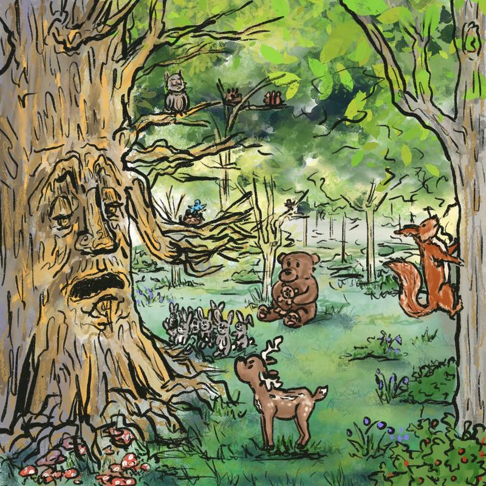

Book illustration and layout · 2021
The Old Oak Tree
An original picture book written, illustrated and typeset from scratch — a story about a lonely oak tree and the seed that grows beside it.
- My role
- Story, illustration, hand-lettering and typesetting for every spread.
- Tools
- Digital painting in Adobe Photoshop.
- Outcome
- A complete picture book, produced in my first year at Bournemouth.
Every spread





The artwork, without text



